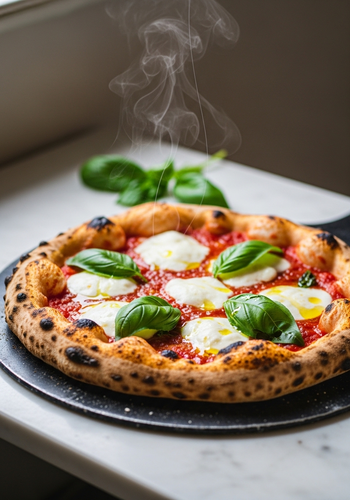
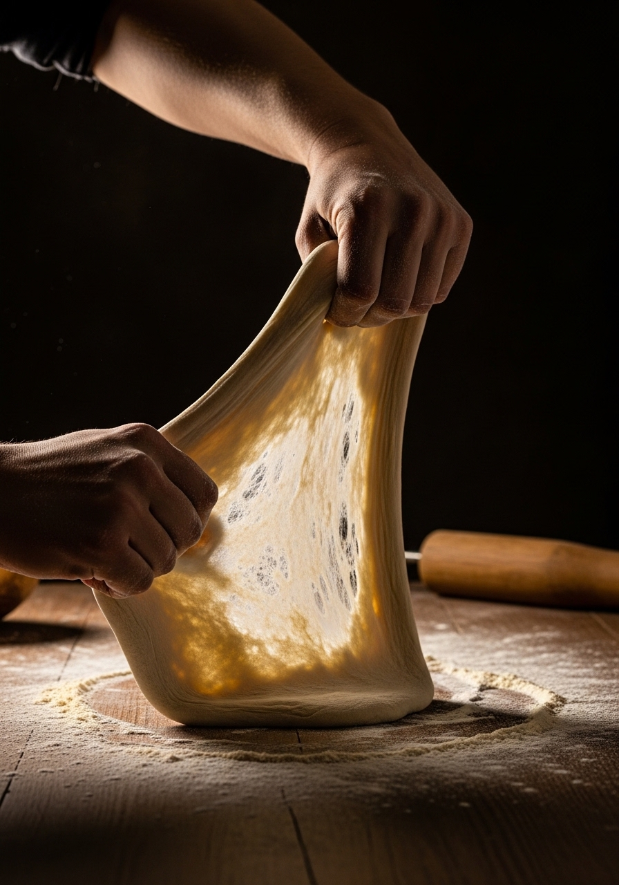

Cinque ingredienti. Una sola ciotola. La migliore pizza che tu abbia mai preparato in casa. Questa ricetta funziona per la pizza napoletana sottile, la pizza alta al tegame o qualsiasi via di mezzo. Padroneggia l'impasto, e la pizza night cambierà per sempre.

5 IngredientiLa farina 00 italiana è macinata finissima, il che crea un impasto incredibilmente liscio ed elastico che si stende magnificamente senza strapparsi. È lo standard a Napoli e produce la caratteristica crosta napoletana. La farina di forza ha più glutine e crea una crosta più gommosa e leggermente più densa — ottima per la pizza in stile New York. Entrambe funzionano bene. Usa quello che trovi, ma se vuoi il risultato italiano più autentico, cerca la farina 00.
L'impasto del giorno è buono. Quello a lievitazione lenta in frigo è straordinario. Conservare l'impasto in frigo per 24–72 ore rallenta la fermentazione, sviluppando sapori complessi che non puoi accelerare. La crosta diventa più saporita, leggermente acidula e sviluppa un colore migliore in forno. Se pianifichi la pizza per sabato, prepara l'impasto giovedì. La differenza è drastica.
Ingredienti
Procedimento

Le palline di impasto non cotto si conservano in frigo fino a 3 giorni o si congelano fino a 3 mesi. Congela in sacchetti con zip oliati dopo la prima lievitazione. Scongela in frigo tutta la notte, poi porta a temperatura ambiente 30 minuti prima di stendere. Puoi fare una grande quantità e avere sempre l'impasto pronto all'occorrenza.
Sì — usa 2 cucchiaini di lievito per dolci al posto del lievito di birra. Mescola l'impasto, salta la lievitazione e cuoci subito. Il risultato è più simile a una focaccia che a una pizza tradizionale, ma funziona in emergenza e impiega solo 15 minuti.
Un impasto leggermente appiccicoso è normale e in realtà auspicabile — mantiene la crosta leggera e ariosa. Evita di aggiungere troppa farina, che rende la crosta densa e dura. Le mani bagnate o un raschietto aiutano a gestire l'appiccicosità.
Sì, la farina 0 funziona. L'impasto sarà leggermente meno elastico ma produce comunque una crosta molto buona. La farina di forza è un sostituto migliore della 0 se cerchi gommosità.
Per lo stile napoletano, stendi a circa 28–30 cm — centro sottile con bordo leggermente più spesso. Per la pizza al tegame, premi in una teglia unta e lascia riposare 20 minuti prima di condire.
Non è necessaria, ma fa una differenza significativa. Una teglia pesante preriscaldata in forno per 30 minuti è la migliore alternativa gratuita. L'obiettivo è il contatto immediato con il calore elevato quando l'impasto tocca la superficie.